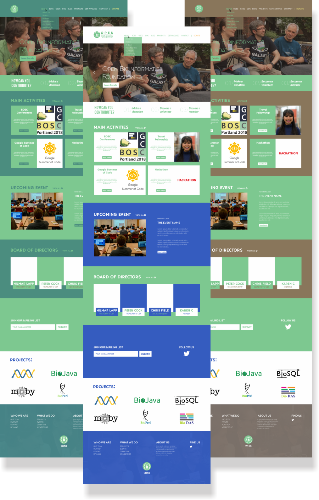

Redesigning OBF Website 0.1
Download PDFBy Nufina
Design Brief
Design a home page for the OBF suitable for the site map below. This could be implemented by creating a custom Wordpress theme, although CMSes will be considered, so long as they have an easy-to-update-site interface. Static site generators such as Jekyll or Hugo are not suitable. More details...
Introduction
This design inspired by Philanthropy theme.
I have researched and organized OBF website contents and decided to choose the Philanthropy theme as my inspiration to redesign the OBF website. This theme is suitable for OBF because there are many similarities that are expected to cover OBF needs. My design is just an ilustration that we can develop according to OBF needs .
I modified in some parts from the original theme to meet OBF needs such as putting board of directors in the Homepage. In terms of setting the contents I made Get Involved link to make it easier for users to participate. For a more detailed explanation please see the ilustration below:
#Homepage
In homepage section, I give some design options and page preview.
1. Color Choices
I have provided some color choices that matches the main color of the OBF. There are many choices and I choose these three to present because they have a good combination.
3. A Breakdown
This breakdown is my attempt to make a detailed explanation in all parts. The part that we can't see in the Homepage will be explained here. There is also an example of drop down menu.
#Page Preview
1. Preview of About
This design is so clean and simple. I

2. Preview of Get Involved
I put all of things that need user contribution in Get Involved. We still have to link each choice to the final page untill the last button.
3. Preview of Donation Page
This donation page is still rough design. I can develop this page if I get a detailed description from OBF. What kind of donation that OBF want, What is method that OBF use to donate, etc.
How to Implement
The important thing to start this work is organizing the contents. I should make sure that I manage contents properly and correctly under the supervision of a mentor. For example, How many pages that we want, What we want to put in the menu bar, what will be put in the About page, etc. So, if I am accepted as an intern I'll make a draft of the content before starting.
1. Use a WordPress CMS
We already know that WordPress is the best CMS that provide the most benefits. I choose WordPress than the other CMS because WordPress CMS is easy to update and has many plugins that we can add to extend functionality or add new features to OBF website. Please, see the general description of amking OBF website below:
Step 1:
Domain name >> Hosting >> Install WordPress >> Login to WordPress
Step 2:
Install Theme >> Customize >> Install Elementor Plugin (we can use other plugin) >> Create Contents of Website (Homepage, About, Blog, etc.) >> Install other plugin if needed (Donation Plugins: Give or Donorbox, Contact Plugins: WPForms or Contact Form 7, etc)
I have made a list of plugins that will be used in my design. Here is the list: .
2. Make Custom Template
This is just an alternative if we can't get template like we want. I'll write code to create templates as what we want and install it via FTP (File Transfer Protocol) and I recommend using FileZilla. In term of how I'll write code to create the template is use HTML/CSS, JavaScript, and JavaScript framework or front end framework if needed.